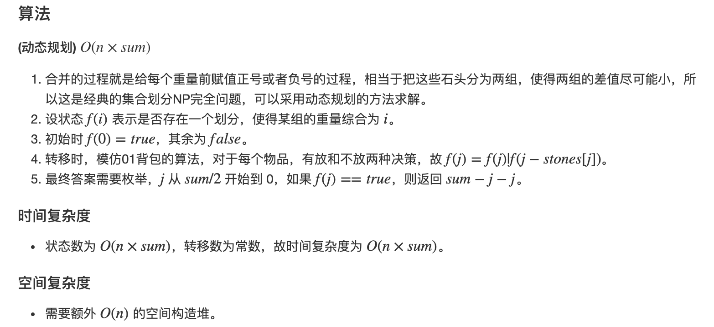

https://leetcode.com/discuss/general-discussion/458695/Dynamic-Programming-Patterns
Minimum (Maximum) Path to Reach a Target¶
Given a target find minimum (maximum) cost / path / sum to reach the target.
746. Min Cost Climbing Stairs¶
On a staircase, the i-th step has some non-negative cost cost[i] assigned (0 indexed).
Once you pay the cost, you can either climb one or two steps. You need to find minimum cost to reach the top of the floor, and you can either start from the step with index 0, or the step with index 1.
Example 1: Input: cost = [10, 15, 20] Output: 15 Explanation: Cheapest is start on cost[1], pay that cost and go to the top. Example 2: Input: cost = [1, 100, 1, 1, 1, 100, 1, 1, 100, 1] Output: 6 Explanation: Cheapest is start on cost[0], and only step on 1s, skipping cost[3]. Note: cost will have a length in the range [2, 1000]. Every cost[i] will be an integer in the range [0, 999].
dp[i] min cost to reach ith stair.
for (int i = 2; i <= n; ++i) {
dp[i] = min(dp[i-1], dp[i-2]) + (i == n ? 0 : cost[i]); // on last step, there is no need to proceed further.
}
return dp[n]
with optimization
int p1 = 0, p2 = 0;
for (int i = 2; i <= cost.size(); ++i) {
int p = min(p1 + cost[i - 1], p2 + cost[i - 2]);
p2 = p1;
p1 = p;
}
return p1;
64. Minimum Path Sum¶
Given a m x n grid filled with non-negative numbers, find a path from top left to bottom right which minimizes the sum of all numbers along its path.
Note: You can only move either down or right at any point in time.
Example:
Input: [ [1,3,1], [1,5,1], [4,2,1] ] Output: 7 Explanation: Because the path 1→3→1→1→1 minimizes the sum.
dp[i][j]: min sum to reach x=i,y=j, dp[i][j] = min(dp[i-1][j], dp[i][j-1]) + cost[i][j]
for (int i = 1; i < n; ++i) {
for (int j = 1; j < m; ++j) {
grid[i][j] = min(grid[i-1][j], grid[i][j-1]) + grid[i][j];
}
}
return grid[n-1][m-1]
322. Coin Change¶
You are given coins of different denominations and a total amount of money amount. Write a function to compute the fewest number of coins that you need to make up that amount. If that amount of money cannot be made up by any combination of the coins, return -1.
Example 1:
Input: coins = [1, 2, 5], amount = 11 Output: 3 Explanation: 11 = 5 + 5 + 1 Example 2:
Input: coins = [2], amount = 3 Output: -1 Note: You may assume that you have an infinite number of each kind of coin.
dp[j]: min # of coins to be used for j amount
for (int j = 1; j <= amount; ++j) {
for (int i = 0; i < coins.size(); ++i) { // try all coins
if (coins[i] <= j) { // only try the one that is less than total required
dp[j] = min(dp[j], dp[j - coins[i]] + 1);
}
}
}
return dp[amount];
Why this cannot be solved by greedy algorithm?¶
Exception:
But for some coin sets, there are sums for which the greedy algorithm fails. For example, for the set {1, 15, 25} and the sum 30, the greedy algorithm first chooses 25, leaving a remainder of 5, and then five 1s for a total of six coins. But the solution with the minimal number of coins is to choose 15 twice.
In any case where there is no coin whose value, when added to the lowest denomination, is lower than twice that of the denomination immediately less than it, the greedy algorithm works. i.e. {1,2,3} works because [1,3] and [2,2] add to the same value however {1, 15, 25} doesn't work because (for the change 30) 15+15>25+1
931. Minimum Falling Path Sum¶
Given a square array of integers A, we want the minimum sum of a falling path through A.
A falling path starts at any element in the first row, and chooses one element from each row. The next row's choice must be in a column that is different from the previous row's column by at most one.
Example 1:
Input: [[1,2,3],[4,5,6],[7,8,9]] Output: 12 Explanation: The possible falling paths are: [1,4,7], [1,4,8], [1,5,7], [1,5,8], [1,5,9] [2,4,7], [2,4,8], [2,5,7], [2,5,8], [2,5,9], [2,6,8], [2,6,9] [3,5,7], [3,5,8], [3,5,9], [3,6,8], [3,6,9] The falling path with the smallest sum is [1,4,7], so the answer is 12.
A[i][j]: min sum from all upper level to current level i and position j, to get the ans, just find the min on the last row
int minFallingPathSum(vector<vector<int>>& A) {
int m = A.size(), n = A[0].size();
int res = INT_MAX;
for (int i = 1; i < m; ++i) {
for (int j = 0; j < n; ++j) {
A[i][j] += min(
{A[i - 1][j], A[i - 1][max(0, j - 1)], A[i - 1][min(m - 1, j + 1)]});
}
}
for (int i = 0; i < n; ++i) res = min(res, A[m - 1][i]);
return res;
}
983. Minimum Cost For Tickets¶
In a country popular for train travel, you have planned some train travelling one year in advance. The days of the year that you will travel is given as an array days. Each day is an integer from 1 to 365.
Train tickets are sold in 3 different ways:
a 1-day pass is sold for costs[0] dollars; a 7-day pass is sold for costs[1] dollars; a 30-day pass is sold for costs[2] dollars. The passes allow that many days of consecutive travel. For example, if we get a 7-day pass on day 2, then we can travel for 7 days: day 2, 3, 4, 5, 6, 7, and 8.
Return the minimum number of dollars you need to travel every day in the given list of days.
Example 1:
Input: days = [1,4,6,7,8,20], costs = [2,7,15] Output: 11 Explanation: For example, here is one way to buy passes that lets you travel your travel plan: On day 1, you bought a 1-day pass for costs[0] = $2, which covered day 1. On day 3, you bought a 7-day pass for costs[1] = $7, which covered days 3, 4, ..., 9. On day 20, you bought a 1-day pass for costs[0] = $2, which covered day 20. In total you spent $11 and covered all the days of your travel. Example 2:
Input: days = [1,2,3,4,5,6,7,8,9,10,30,31], costs = [2,7,15] Output: 17 Explanation: For example, here is one way to buy passes that lets you travel your travel plan: On day 1, you bought a 30-day pass for costs[2] = $15 which covered days 1, 2, ..., 30. On day 31, you bought a 1-day pass for costs[0] = $2 which covered day 31. In total you spent $17 and covered all the days of your travel.
Note:
1 <= days.length <= 365 1 <= days[i] <= 365 days is in strictly increasing order. costs.length == 3 1 <= costs[i] <= 1000
dp[i]: min cost for ith day. Note: if there is no travel plan, the cost will stay the same as the i-1 th day.
int mincostTickets(vector<int>& days, vector<int>& costs) {
unordered_set<int> travel(begin(days), end(days));
int dp[366] = {};
for (int i = 1; i < 366; ++i) {
if (travel.find(i) == travel.end()) dp[i] = dp[i - 1];
else dp[i] = min({ dp[i - 1] + costs[0], dp[max(0, i - 7)] + costs[1], dp[max(0, i - 30)] + costs[2]});
}
return dp[365];
}
650. 2 Keys Keyboard¶
Initially on a notepad only one character 'A' is present. You can perform two operations on this notepad for each step:
Copy All: You can copy all the characters present on the notepad (partial copy is not allowed). Paste: You can paste the characters which are copied last time.
Given a number n. You have to get exactly n 'A' on the notepad by performing the minimum number of steps permitted. Output the minimum number of steps to get n 'A'.
Example 1:
Input: 3 Output: 3 Explanation: Intitally, we have one character 'A'. In step 1, we use Copy All operation. In step 2, we use Paste operation to get 'AA'. In step 3, we use Paste operation to get 'AAA'.
Note:
The n will be in the range [1, 1000].
dp[i]: min steps to get to get i 'A' characters.
int dp[n + 1];
memset(dp, 0, sizeof dp);
for (int i = 2; i <= n; ++i) {
dp[i] = i; // initially assume copy one and paste one by one
for (int j = i - 1; j >= 1; --j) {
if (i % j == 0) {
dp[i] = dp[j] + i / j; // j is the maximum, so no need to check the rest
break;
}
}
}
return dp[n];
Optimize
int s = 0;
for (int d = 2; d <= n; d++) {
while (n % d == 0) {
s += d;
n /= d;
}
}
return s;
279. Perfect Squares¶
Given a positive integer n, find the least number of perfect square numbers (for example, 1, 4, 9, 16, ...) which sum to n.
Example 1:
Input: n = 12 Output: 3 Explanation: 12 = 4 + 4 + 4. Example 2:
Input: n = 13 Output: 2 Explanation: 13 = 4 + 9.
dp[i]: min # of perfect squares to form i
int numSquares(int n) {
int dp[n + 1], inf = 0x3f3f3f3f;
memset(dp, inf, sizeof dp);
for (int i = 0; i <= n; ++i) {
for (int j = 1; j * j <= i; ++j) {
if (i - j * j >= 0) dp[i] = min(dp[i], dp[i - j * j] + 1);
if (j * j == i) dp[i] = 1;
}
}
return dp[n];
}
1049. Last Stone Weight II¶
We have a collection of rocks, each rock has a positive integer weight.
Each turn, we choose any two rocks and smash them together. Suppose the stones have weights x and y with x <= y. The result of this smash is:
If x == y, both stones are totally destroyed; If x != y, the stone of weight x is totally destroyed, and the stone of weight y has new weight y-x. At the end, there is at most 1 stone left. Return the smallest possible weight of this stone (the weight is 0 if there are no stones left.)
Example 1:
Input: [2,7,4,1,8,1] Output: 1 Explanation: We can combine 2 and 4 to get 2 so the array converts to [2,7,1,8,1] then, we can combine 7 and 8 to get 1 so the array converts to [2,1,1,1] then, we can combine 2 and 1 to get 1 so the array converts to [1,1,1] then, we can combine 1 and 1 to get 0 so the array converts to [1] then that's the optimal value.
Note:
1 <= stones.length <= 30 1 <= stones[i] <= 100

int lastStoneWeightII(vector<int>& stones) {
int n = stones.size(), sum = 0;
for (int s : stones) sum += s;
vector<bool> dp(sum + 1, false);
dp[0] = true;
for (int i = 0; i < n; ++i) {
for (int j = sum / 2; j >= stones[i]; --j)
dp[j] = dp[j] | dp[j - stones[i]];
}
for (int i = sum / 2; i >= 0; --i)
if (dp[i]) return sum - i - i;
return sum;
}
120. Triangle¶
Given a triangle, find the minimum path sum from top to bottom. Each step you may move to adjacent numbers on the row below.
For example, given the following triangle
[ [2], [3,4], [6,5,7], [4,1,8,3] ] The minimum path sum from top to bottom is 11 (i.e., 2 + 3 + 5 + 1 = 11).
Note:
Bonus point if you are able to do this using only O(n) extra space, where n is the total number of rows in the triangle.
dp[i]: min cost from bottom to i-th row
int minimumTotal(vector<vector<int>>& triangle) {
vector<int> dp(triangle.back());
int n = triangle.size();
for (int i = n - 2; i >= 0; --i) { // rows
for (int j = 0; j <= i; ++j) { // num of elem in each row = i + 1
dp[j] = min(dp[j], dp[j + 1]) + triangle[i][j]; // left: dp[j], right: dp[j + 1]
}
}
return dp[0];
}
474. Ones and Zeroes¶
Given an array, strs, with strings consisting of only 0s and 1s. Also two integers m and n.
Now your task is to find the maximum number of strings that you can form with given m 0s and n 1s. Each 0 and 1 can be used at most once.
Example 1:
Input: strs = ["10","0001","111001","1","0"], m = 5, n = 3 Output: 4 Explanation: This are totally 4 strings can be formed by the using of 5 0s and 3 1s, which are "10","0001","1","0". Example 2:
Input: strs = ["10","0","1"], m = 1, n = 1 Output: 2 Explanation: You could form "10", but then you'd have nothing left. Better form "0" and "1".
My dp[i][j] means with i zeros and j ones, what is the max strings to be chosen from the strs. In order to calculate it, we find there is a relationship between # of 1 and 0, which is # of 1 + # of 0 = string size, this pattern of constraint usually leads to a knapsack problem. We can visualize it with the problem of knapsack:
- choose current string means dp[i-# of zero for current string][j - # of one for current string] + 1.
- not choose current string means dp[i][j] which means there is nothing changed as previous state. Why it has to start from m, n and decrease to 1 (or making sure there is at least # of 0 or 1 spots left in our case)? Because it prevents invalid counting. As we can see, our dp[m][n] is going to be updated sz times, and before we calculate i - zero[k] and j - one[k], they has to be valid. If we start from 0 and increase to m, n, these values will never be updated beforehand.
int findMaxForm(vector<string>& strs, int m, int n) {
int sz = strs.size();
int one[sz], zero[sz];
for (int i = 0; i < sz; ++i) {
int c1 = 0, c2 = 0;
for (char c : strs[i]) {
if (c == '1') c2++;
if (c == '0') c1++;
}
zero[i] = c1, one[i] = c2;
}
int dp[m + 1][n + 1];
memset(dp, 0, sizeof dp);
for (int k = 0; k < sz; ++k) {
for (int i = m; i >= zero[k]; --i) {
for (int j = n; j >= one[k]; --j) {
dp[i][j] = max(dp[i][j], dp[i - zero[k]][j - one[k]] + 1);
}
}
}
return dp[m][n];
}
221. Maximal Square¶
Given a 2D binary matrix filled with 0's and 1's, find the largest square containing only 1's and return its area.
Example:
Input:
1 0 1 0 0 1 0 1 1 1 1 1 1 1 1 1 0 0 1 0
Output: 4